地政学
ボルチモアは首都ワシントンとフィラデルフィアの間で、港、鉄道、州都アナポリスへの近さを持ちます。軍需、大学病院、沿岸物流、球場の人流が重なり、東海岸の実務を支える湾奥都市です。湾の奥行きも戦略性を保ちます

🇺🇸 アメリカ合衆国 / 北米 / World City Atlas
チェサピーク湾奥の港湾都市です。内港再生、医療研究、大学、黒人文化、連棟住宅、産業衰退後の格差、鉄道と港の物流が、アメリカ東海岸の都市史を濃く映しています。
都市の骨格
ボルチモアは首都ワシントンに近い一方、独自の港湾労働、黒人文化、医療研究、連棟住宅の景観を持ちます。水辺の再生と空き家の多い地区が同じ市域にあり、都市の成功と傷が近接しています。
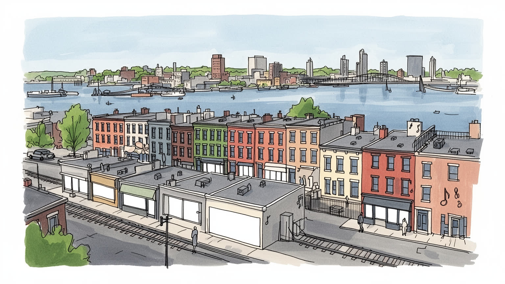
ボルチモアは首都ワシントンとフィラデルフィアの間で、港、鉄道、州都アナポリスへの近さを持ちます。軍需、大学病院、沿岸物流、球場の人流が重なり、東海岸の実務を支える湾奥都市です。湾の奥行きも戦略性を保ちます
港湾、倉庫、鉄道、医療研究、大学、保険、防衛関連が雇用を支えます。製鉄縮小後も、荷役、看護、清掃、配送、介護、飲食、球場労働、市場の小商いが都市を動かし、所得差が街路に残ります。技能継承も論点です。
黒人教会、ジャズ、ゴスペル、ヒップホップ、地域ラジオ、映画、蟹料理、移民食堂が表情を作ります。カトリック、ユダヤ人地区、モスク、教会も重なり、祈りと音楽が日常を結びます。祭りと球場の声も街を包みます。
観光客は内港、水族館、球場、フェルズポイント、フォート・マクヘンリーを巡ります。住民には空き家、治安、学校、交通、医療、家賃、子どもや高齢者の移動が切実です。市場や商店街も日々の生活を支え続けます。
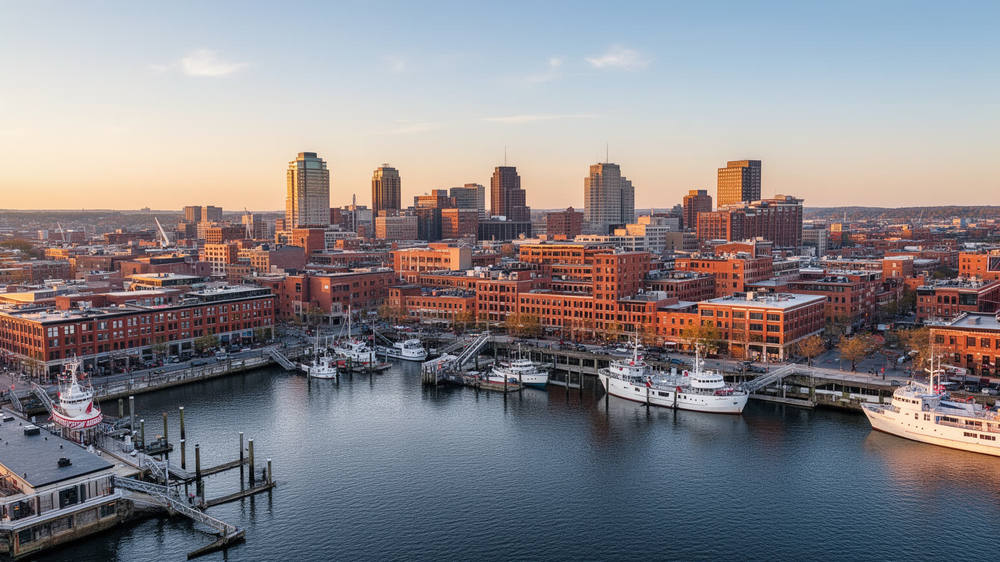
ボルチモアを最初に印象づけるのは、チェサピーク湾へ開く内港です。かつては倉庫、造船、貨物の実務が集まった水辺が、現在は遊歩道、水族館、商業施設、ホテル、博物館、会議、観光船を引き寄せる都市の表玄関になっています。内港再生はアメリカの水辺再開発の代表例として語られ、荒れた港湾跡地を観光と公共空間へ変えた成功物語を持ちます。しかし、この成功は市全体の問題を解いたわけではありません。水辺が磨かれるほど、背後の住宅地に残る空き家、学校格差、貧困、治安不安との距離が目立ちます。観光客が歩くプロムナードは明るく整えられていますが、数ブロック離れれば、雇用や住宅投資から取り残された地区が現れます。水辺の風、煉瓦倉庫、連邦時代の記憶、Oriolesの試合帰り、蟹料理、夕暮れの港の美しさを楽しみながら、その背後にある公共投資、観光労働、警備、清掃、交通の調整まで見ると、内港は都市政治の舞台になります。週末には家族連れ、修学旅行、学生、屋台、ストリート演奏が混じり、塩気、揚げ物、船のエンジン音が港の記憶を作ります。近年は洪水、暑さ、老朽インフラへの備えも水辺計画に組み込まれ、観光の快適さと住民の避難路を同時に考える必要が増しています。港を眺める場所が、都市全体の安全と公平性を測る場所にもなっています。夜には湾風と歓声が残ります。
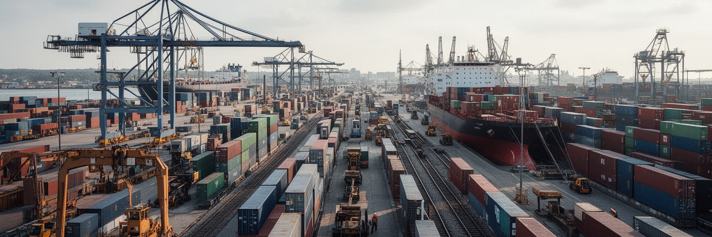
ボルチモア港は、観光の内港とは別の顔を持つ実務の空間です。自動車、農機、建設機械、紙、金属、砂糖、コンテナ、バルク貨物が、岸壁、倉庫、クレーン、鉄道、幹線道路を通じて内陸へ動きます。チェサピーク湾の奥にある地理は、海上輸送と中西部や南部へ向かう陸上輸送を結び、東海岸の産業地図で重要な位置を占めてきました。港は荷物の通過点にとどまりません。荷役、通関、トラック運転、鉄道運行、倉庫管理、修理、保険、保安、清掃、飲食、船員サービスまで、多くの仕事が港を中心に発生します。製造業の縮小で市内の雇用が失われた後も、港は都市に現場労働の基盤を残しました。一方で、港湾労働は景気、国際貿易、燃料価格、労使交渉、橋や道路の安全に左右されやすいです。大型船に対応する投資は競争力を高める一方、周辺の大気、騒音、トラック交通、低所得地区への負担も増やします。夜明けの倉庫、線路脇の作業、港湾労働者の組合、修理工場、物流会社の事務所、作業後に寄る小さな店を結ぶと、港は生活圏として見えてきます。橋の通行止めや航路の事故が起きれば、貨物だけでなく通勤、商店、自治体財政まで揺れます。汽笛、ブレーキ音、ディーゼル臭、湾の湿った風は、港の仕事が遠い世界ではなく街の呼吸であることを知らせます。早朝の弁当店も日々の労働を支えます。
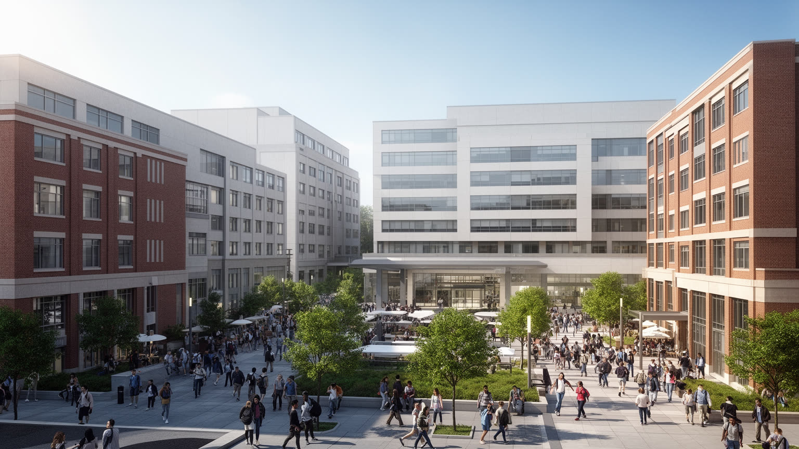
ボルチモアの現代的な競争力を支える大きな柱は、医療研究と高等教育です。ジョンズ・ホプキンス大学と医療機関、メリーランド大学の医療・法学・社会科学の拠点、研究所、バイオ企業、財団、連邦研究資金が、市内に知識労働の厚い層を作っています。病院は高度医療を提供するだけでなく、看護、検査、清掃、警備、給食、事務、翻訳、施設管理などの雇用を生む巨大な都市装置です。研究室で扱われる感染症、神経科学、公衆衛生、薬剤、データ解析は世界的な知識へつながる一方、病院の周囲には貧困、慢性疾患、住宅の老朽化、薬物依存、交通不便も存在します。医療の卓越性と住民の健康格差が近距離にあることが、ボルチモアの難しさです。大学病院が地域へ投資し、雇用訓練、住宅支援、学校連携、予防医療を広げられるかは、都市の公平性に直結します。白衣の研究者だけを見ても、この都市の医療は読めません。夜勤の看護師、救急搬送、保険の手続き、低所得者の通院、学生食堂や図書館に集まる若者、研究対象となる地域社会との信頼まで含めて、医療都市の実態が見えます。子どもの健康教室や高齢者の移動支援も、知識産業の足元にあります。大学が拡張する場所では、土地取得や警備、家賃上昇への不安も生まれます。知識拠点が地域の壁にならず、雇用と公共空間を開けるかが重要です。
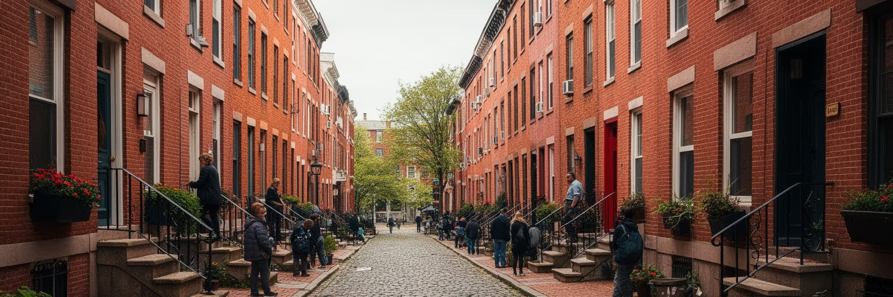
ボルチモアの街路を特徴づけるのは、煉瓦の連棟住宅です。狭い間口、階段、前庭、路地、角の店、教会、学校、小さな公園が、港湾労働者、工場労働者、移民、黒人家族、学生、若い専門職の生活を長く受け止めてきました。連棟住宅は建築様式である前に、隣人の視線、玄関前の会話、子どもの遊び、葬儀、教会帰り、夏の暑さ、冬の暖房、修繕費、空き家問題まで含む都市生活の単位です。地区ごとに住宅の状態や価格は大きく異なり、フェルズポイントやフェデラルヒルのように再評価された場所もあれば、東西の一部には長期の空き家と撤去地が残ります。角の店では朝食、宝くじ、新聞、携帯料金の支払いが重なり、理髪店や美容室は地域ニュースと学校の話題を運びます。家を直す資金を持つ人には歴史的な魅力が資産になりますが、低所得の住民には雨漏り、鉛、断熱不足、固定資産税、治安不安が重くのしかかります。再開発が進めば、古い家並みは保存されても、長く住んだ人が家賃や税で押し出されることがあります。煉瓦の連続を見るだけでなく、誰が修繕でき、誰が住み続けられ、どのブロックが投資から外されたのかを見る必要があります。玄関前の階段は、近所の見守りや会話の場にもなります。空き地を庭や遊び場へ変える小さな活動も、子どもと高齢者が街路を使い続ける力になります。
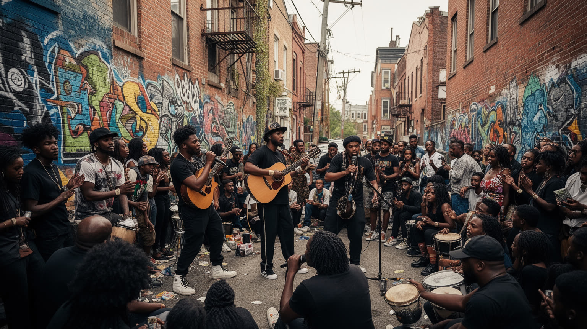
ボルチモアは黒人住民の歴史と文化を抜きに語れない都市です。奴隷制、自由黒人コミュニティ、港湾労働、教会、学校、新聞、音楽、政治運動、公民権運動、警察との緊張、地域の相互扶助が、市の記憶に深く刻まれています。黒人教会は礼拝の場所であるだけでなく、葬儀、食料支援、教育、選挙動員、若者の見守り、依存症からの回復支援を担ってきました。ジャズ、ゴスペル、クラブミュージック、ヒップホップ、詩、映画、テレビドラマに描かれる街路の言葉は、ボルチモアの痛みと誇りを外へ伝えます。地域ラジオ、新聞、ポッドキャスト、学校体育館のバスケットボール、RavensやOriolesを語る理髪店の会話も、街のメディア空間を作ります。文化を消費するだけでは都市の現実は見えません。黒人地区は長く住宅差別、赤線引き、金融排除、学校資源の不足、警察暴力、薬物政策の影響を受けてきました。こうした構造は、治安だけの話として処理できません。ボルチモアの黒人文化は、困難の中で生まれた創造性であり、公平な制度を求める政治の声でもあります。店先の会話、教会の合唱、地域ラジオ、理髪店、学校の体育館、追悼の壁画を歩くと、都市の公共性が住民の記憶と関係によって作られていることが分かります。文学や映像に描かれた都市像も、住民自身の語りと照らし合わせて読む必要があります。表現は誇りを広げる一方、偏った消費を生むこともあります。
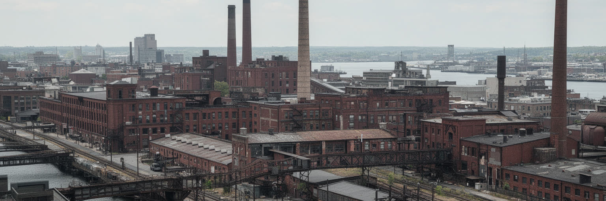
ボルチモアの都市形成には、港だけでなく製鉄、造船、缶詰、衣料、鉄道、砂糖精製、倉庫業が深く関わってきました。工場の煙突、線路、倉庫、労働者住宅、ドック、古い市場は、産業都市としての記憶を街に残しています。二十世紀後半に製造業が縮小し、工場が閉じ、港湾機能が自動化されると、多くの地区は雇用と人口を失りました。仕事の喪失は賃金だけでなく、組合、近所の店、学校への寄付、家族の時間、若者が技能を覚える場を奪りました。空き工場は芸術施設、オフィス、住宅、店舗、クラフトビールの醸造所へ転用されることもありますが、その再利用が地域全体の回復につながるとは限りません。産業遺産が魅力的な背景として消費される一方、元労働者や低所得住民が利益から外れることもあります。産業記憶を読むには、煉瓦倉庫の美しさだけでなく、解雇、労働災害、移民労働、黒人労働者の差別、港湾組合、工場跡地の汚染まで含める必要があります。産業は過去の物語ではなく、土地利用、健康、教育、雇用訓練、交通に影響します。新しい医療や観光の経済が成長しても、工業都市の記憶をどう引き継ぐかが、ボルチモアの社会的な深さを決めます。古い工場跡を歩くと、金属の匂い、線路の音、倉庫の影、働く人の昼食店が、失われた仕事と新しい仕事の距離を教えます。再利用の成功は、技能と地域の誇りを次の世代へ渡せるかにかかっています。
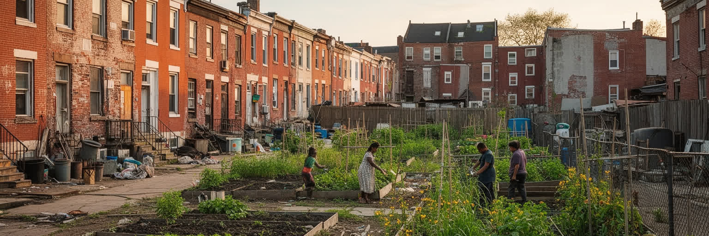
ボルチモアの社会問題を語るとき、住宅格差は避けて通れません。人口減少、産業衰退、住宅差別、赤線引き、金融排除、公共投資の偏り、薬物政策、学校格差が重なり、一部の地区には空き家と撤去地が集中しています。窓や扉を板でふさがれた連棟住宅は、家族の移動、資産形成の機会、税収、治安、教育、健康が失われた結果です。一方で、水辺や大学周辺、歴史地区では再開発と住宅価格の上昇が進み、古い建物が新しい投資の対象になります。同じ市内で、修繕される家と放置される家、資産になる煉瓦と危険物件になる煉瓦が隣り合います。住宅政策は、建物を壊すか残すかだけでは足りません。所有権、固定資産税、低利融資、鉛対策、学校、公共交通、食料品店、精神保健、暴力防止、若者の仕事を一体で考える必要があります。公正な都市へ近づけるには、投資を呼び込むだけでなく、長く住む人が修繕し、相続し、近所を維持できる仕組みが要ります。角の食品店、フードパントリー、学校の放課後活動、路上販売、近隣新聞の小さな告知は、空き家が多い街区でも生活をつなぐ装置です。住宅の不安は健康にもつながります。鉛、湿気、暑さ、害虫、暖房費、避難先の不足は、子どもの学習や高齢者の体調を直接左右します。建物を直すことは、医療や教育への投資でもあります。住民組織、土地信託、修繕助成が細くても続けば、空白の多い街区に生活の選択肢を戻せます。
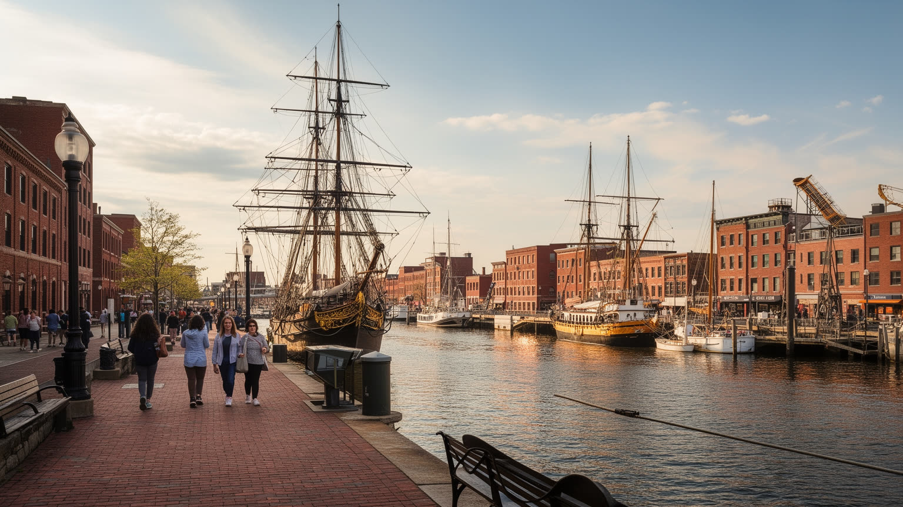
ボルチモア観光は、内港だけで完結しません。国歌の記憶を持つフォート・マクヘンリー、古い港町の面影を残すフェルズポイント、Camden Yards、M&T Bank Stadium、鉄道博物館、美術館、エドガー・アラン・ポーの記憶、リトルイタリー、レキシントン市場、蟹料理、クラフトビール、音楽の場が、港町の歴史を広げます。観光客にとっては、歩きやすい水辺と食の楽しみが入口になりますが、都市の遺産はもっと複雑です。独立戦争、米英戦争、移民、奴隷制、自由黒人、労働争議、産業衰退、公民権運動、薬物政策、再開発の記憶が同じ市域に積み重なっています。レキシントン市場では蟹、オイスター、チキン、スイーツ、移民の食堂が並び、Old Bayの香りと買い物客の声が港町の食を近くします。観光収入はホテル、飲食、清掃、警備、交通、文化施設を支えますが、地域住民の生活費や混雑、短期滞在化も変えます。水族館の家族連れ、球場へ向かう人波、古い酒場、教会、記念碑を一つの散策路に置くと、ボルチモアはアメリカ都市史を歩いて読む場所になります。Preakness StakesやArtscapeの時期には、競馬、音楽、屋台、交通規制が街のリズムを変えます。楽しい消費と難しい記憶を分けずに扱う力が、この港町観光の奥行きを今も静かに決めています。
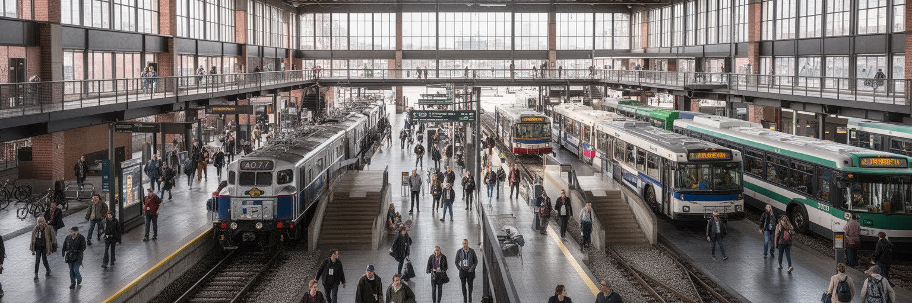
ボルチモアは、アメリカ東海岸の交通回廊の中にある都市です。北へフィラデルフィアとニューヨーク、南西へワシントン、南へ空港と港、内陸へ貨物鉄道が伸び、都市は移動の中継点として機能してきました。ペン駅は都市間鉄道と通勤の玄関であり、ライトレール、地下鉄、バス、州内通勤鉄道、港湾鉄道、幹線道路が住民と貨物を動かします。しかし交通の便利さは地区によって大きく異なります。車を持てる人は郊外の仕事や買い物へアクセスしやすいが、車を持たない住民はバスの本数、乗り換え、治安、遅延に生活を左右されます。医療機関や大学が近くても、通院や通学に時間がかかれば機会は遠くなります。港湾や倉庫の雇用は郊外や水辺に広がり、夜勤の労働者ほど公共交通の弱さに影響されます。道路投資は物流を支える一方、過去には高速道路計画が住宅地を分断し、黒人地区や低所得地区に負担を押しつけました。ボルチモアを交通都市として読むには、鉄道史の誇りだけでなく、バス停で待つ人、車を持たない高齢者、港へ向かうトラック、州都や首都へ通う労働者を同じ地図に置く必要があります。交通は成長の手段であると同時に、公平性を測る尺度でもあります。近隣の雇用が減った場所ほど、移動の質が生活再建を左右します。一本の路線変更や運賃負担が、病院、学校、仕事、食料品店への距離を変えてしまうからです。
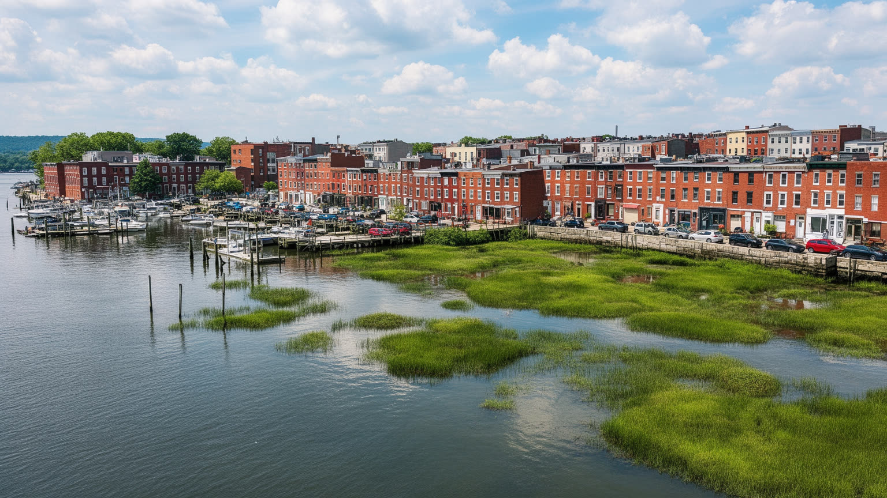
ボルチモアは水辺の都市であるからこそ、気候と環境の影響を強く受けます。チェサピーク湾へ注ぐ川、雨水排水、古い下水、埋立地、湿地、港湾施設、低地の住宅地が、都市の安全と健康に関わっています。夏は蒸し暑く、熱波はアスファルト、古い住宅、木陰の少ない街路、エアコンを十分に使えない世帯、屋外労働者に重くのしかかります。豪雨は道路冠水、地下施設、港湾作業、下水の負荷を増やし、湾の水質にも影響します。水辺再生は魅力的な景観を作りますが、海面上昇や高潮、洪水リスクを考えなければ長続きしません。環境の論点は自然保護だけではなく、どの地区に木があり、どの家が断熱され、誰が冷房費を払えず、どの学校が暑さに弱いかという公平性の論点です。チェサピーク湾の生態系は漁業、蟹料理、観光、地域の誇りと結びついているため、水質の悪化は文化と経済にも響きます。ボルチモアの気候適応は、防潮、排水、緑化、住宅改修、公共交通、港湾管理を一体で進める必要があります。水辺の美しさを守ることは、観光のためだけでなく、暑さと雨の時代に住民の生命を守る都市政策でもあります。雨水庭園、街路樹、屋根の断熱、学校の冷房、避難情報の多言語化は小さく見えても重要です。気候対策を近隣単位で進められるかが、湾岸都市としての回復力を左右します。港の浚渫、湿地の回復、住宅街の木陰づくりを結び直す視点が欠かせません。
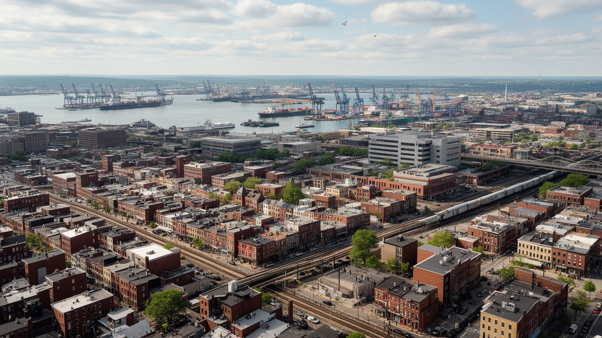
ボルチモアは、アメリカ都市の成功と傷を近距離で見せる街です。内港の再生、医療研究の世界的な知名度、大学、港湾物流、球場、蟹料理、歴史的な連棟住宅は、都市の魅力をはっきり示します。一方で、空き家、住宅差別の遺産、学校格差、薬物依存、警察への不信、人口減少、交通の不平等は、同じ市域の中で日常的な課題として残ります。ボルチモアを外から眺めると、荒廃した都市という単純なイメージか、水辺観光の明るいイメージのどちらかに寄りやすいです。しかし、実際の都市はその二つの間にあります。港で働く人、病院で夜勤をする人、教会で支援を続ける人、家を修繕する住民、大学で研究する学生、バスで通勤する介護職、球場へ向かう家族が、同じ都市をそれぞれ違う時間で使っています。ボルチモアを読むことは、港湾都市、黒人都市、医療都市、観光都市、住宅危機の都市を一つに重ねることです。都市の未来は、観光地を磨くことだけでも、研究機関を増やすことだけでも決まりません。水辺の投資が内陸の近隣へ届き、医療の知識が住民の健康へ届き、歴史的な家並みが住民の資産として残るとき、港町の誇りはより深い公共性を持ちます。そのためには、外からの評価よりも、住民が安全に働き、学び、家を直し、祈り、遊べる日常を基準にする必要があります。ボルチモアの重要性は、傷を抱えた都市がなお文化と制度を作り直そうとする過程にあります。